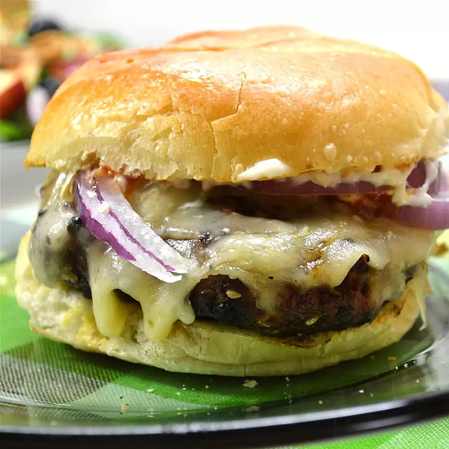

Garlilc And Onion Recipe
This recipe makes very flavorful burgers. The secret is refrigerating the meat after adding the other ingredients. Use ground round or sirloin for the best results.

Nutrition Info
Servings: 5
Yeild: 5 to 6 burgers
Ingredients
- 2 pounds ground beef
- 1 tablespoon Worcestershire sauce
- 3 cloves garlic, minced
- ½ cup minced onion
- 1 teaspoon salt
- ½ teaspoon ground black pepper
- 1 teaspoon Italian-style seasoning
Directions
-
Step 1
In a large bowl, mix together the beef, Worcestershire sauce, garlic, onion, salt, pepper and Italian seasoning. Refrigerate for 2 to 4 hours.
-
Step 2
Preheat grill for high heat.
-
Step 3
Form burgers into 1/2 inch thick patties. Lightly oil grate. Place burgers on grill. Cook for approximately 6 minutes, turning once.
Other Recipes
Go to homepage